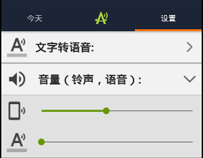
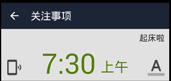

设置 文字转语音(TTS)引擎:
点击设置，选择喜欢的语音引擎。如果只有默认的Pico TTS，建议安装其他语音引擎以获得更好的朗读效果。该软件主要使用Google文字转语音引擎（可使用豌豆荚下载）和科大讯飞语音做测试。
长按任意一个语音引擎进入高级设置（如语速，发音人等）
点击每个项目的标题可以隐藏或展开该项目的设置。
点击"闹钟自动关闭时间”可展开设置选项，输入时间(分钟)以控制闹钟响起后的自动关闭时间。
长按"+"快速创建一次性提醒:
长按"+"按钮可打开一次性提醒的设置菜单，然后选择预定义的时间
长按某闹钟事项可删出该事项
闹钟内容设置技巧:
点击顶部返回按钮取消当前设置
拖动  改变关注项目顺序
改变关注项目顺序
点击  关闭语音
关闭语音
点击 关闭所有声音
长按某关注事项的文字可删除该关注项
为什么没有声音？

在设置屏幕，声音选项被设为静音
在设置屏幕，语音(TTS)被设置为静音

闹钟内容设置屏幕，语音(TTS)被关闭
如果是小米手机，请确保“自动启动管理”中允许该软件启动。点击查看详情。
无法加载关注项目(比如，新闻):
某些关注事项需要有网络，比如天气，新闻
自定义新闻链接必须是标准的RSS2.0  格式
格式
开启连接点击模式&收索关键字
点击"开启连接点击模式"后，可以点击蓝色链接新闻链接
点击放大镜以收索关注项（比如，新闻）中的关键词，再次点击查找下一个匹配文字